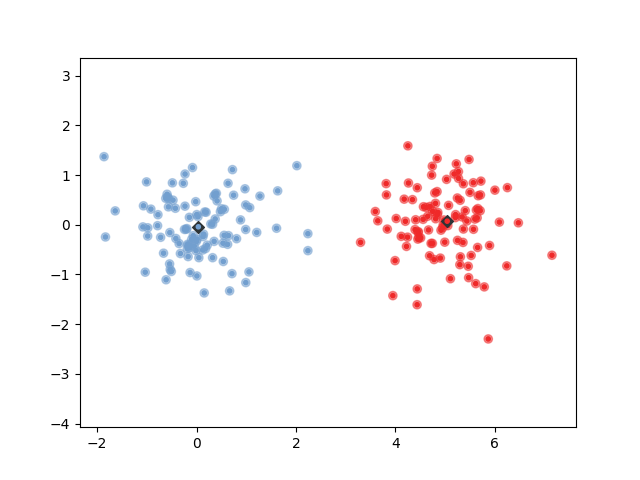

Generalized Learning Vector Quantization¶
This example shows how GLVQ classifies. The plot shows the target class of each data point (big circle) and which class was predicted (smaller circle). It also shows the prototypes (black diamond) and their labels (small point inside the diamond).
Out:
GLVQ:
('classification accuracy:', 1.0)
import numpy as np
import matplotlib.pyplot as plt
from glvq import GlvqModel
from glvq.plot_2d import to_tango_colors, tango_color
print(__doc__)
nb_ppc = 100
print('GLVQ:')
toy_data = np.append(
np.random.multivariate_normal([0, 0], np.eye(2) / 2, size=nb_ppc),
np.random.multivariate_normal([5, 0], np.eye(2) / 2, size=nb_ppc), axis=0)
toy_label = np.append(np.zeros(nb_ppc), np.ones(nb_ppc), axis=0)
glvq = GlvqModel()
glvq.fit(toy_data, toy_label)
pred = glvq.predict(toy_data)
plt.scatter(toy_data[:, 0], toy_data[:, 1], c=to_tango_colors(toy_label), alpha=0.5)
plt.scatter(toy_data[:, 0], toy_data[:, 1], c=to_tango_colors(pred), marker='.')
plt.scatter(glvq.w_[:, 0], glvq.w_[:, 1],
c=tango_color('aluminium', 5), marker='D')
plt.scatter(glvq.w_[:, 0], glvq.w_[:, 1],
c=to_tango_colors(glvq.c_w_, 0), marker='.')
plt.axis('equal')
print('classification accuracy:', glvq.score(toy_data, toy_label))
plt.show()
Total running time of the script: ( 0 minutes 0.065 seconds)